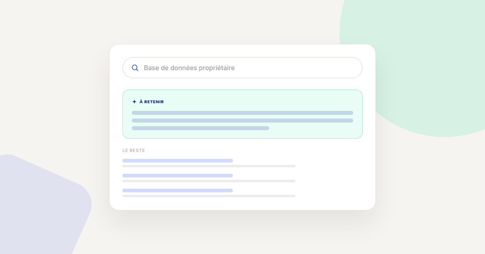
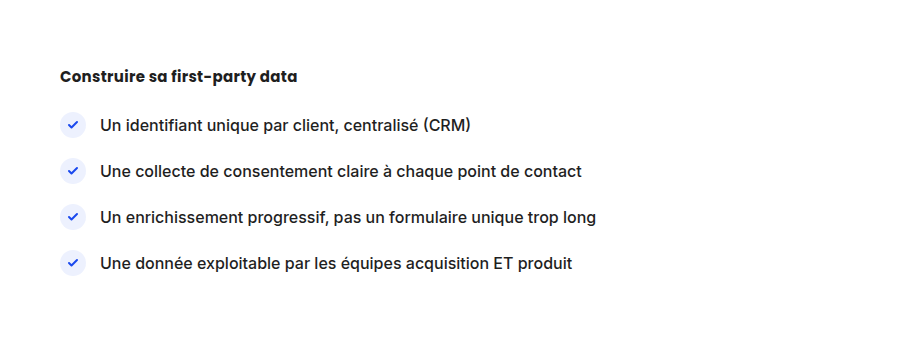

First-party data : la checklist pour ne plus dépendre des cookies tiers
Après des années d'annonces sur la fin des cookies tiers, Google a fini par faire marche arrière : ils restent actifs par défaut dans Chrome. Ce revirement ne rend pas la first-party data moins stratégique pour autant — elle reste la donnée la plus fiable et la plus pérenne, quelle que soit la politique du navigateur du moment.

En avril 2025, Google a officiellement annoncé qu'il maintenait les cookies tiers actifs par défaut dans Chrome, mettant fin à des années d'annonces sur leur suppression progressive via le projet Privacy Sandbox. Ce revirement change le calendrier, mais pas la conclusion : la donnée collectée directement auprès de vos visiteurs et clients reste la plus fiable, la moins dépendante des décisions d'un tiers, et la plus résistante aux évolutions réglementaires à venir.
Pourquoi continuer à investir dans la first-party data malgré le revirement de Google
Le paysage réglementaire européen (RGPD, futures évolutions de l'ePrivacy) continue d'évoluer indépendamment des choix techniques de Chrome. Une stratégie construite uniquement sur la disponibilité actuelle des cookies tiers reste exposée à un changement futur, qu'il vienne d'un navigateur, d'un régulateur, ou d'une évolution des attentes des utilisateurs eux-mêmes en matière de vie privée.
La checklist pour structurer sa collecte
- Un identifiant unique et centralisé par client. Sans identifiant commun entre le CRM, l'outil d'emailing et la plateforme publicitaire, la donnée reste fragmentée en silos qui ne se parlent pas — la valeur de la first-party data vient justement de sa centralisation.
- Un consentement recueilli clairement à chaque point de collecte, pas seulement au niveau du bandeau cookies général : un formulaire d'inscription, un compte client, un programme de fidélité sont autant de points de collecte qui doivent chacun être conformes.
- Un enrichissement progressif plutôt qu'un formulaire unique surchargé. Demander dix champs dès la première interaction fait chuter le taux de complétion — mieux vaut collecter un email au premier contact, puis enrichir le profil au fil des interactions suivantes.
- Une donnée exploitable au-delà de l'équipe qui l'a collectée. Une base de données first-party qui ne sert qu'à l'équipe emailing perd une grande partie de sa valeur — elle devrait aussi nourrir le ciblage publicitaire (audiences personnalisées), la personnalisation produit, et le scoring commercial.

Le piège à éviter : collecter plus que ce qui est utilisé
Une base de données first-party volumineuse mais jamais exploitée n'est pas un actif — c'est un passif juridique, puisque le RGPD impose de justifier la conservation de chaque donnée par un usage réel. Avant d'ajouter un champ de collecte supplémentaire, la question à se poser est simple : quelle décision marketing concrète cette donnée va-t-elle permettre de prendre, et par quelle équipe.
Comment l'utiliser une fois collectée
- Créez des audiences personnalisées sur les plateformes publicitaires à partir de vos listes de clients, pour du ciblage ou de l'exclusion, sans dépendre du tracking cross-site.
- Segmentez vos scénarios de lifecycle marketing sur des données comportementales propriétaires plutôt que sur des données démographiques génériques.
- Croisez la donnée first-party avec l'analytics comportemental pour comprendre non seulement qui sont vos clients, mais comment ils interagissent réellement avec votre site avant de convertir.
FAQ
Les cookies tiers vont-ils finalement disparaître de Chrome ?
Non, en l'état actuel : Google a annoncé en avril 2025 qu'il maintenait les cookies tiers actifs par défaut, abandonnant son projet de les supprimer via le Privacy Sandbox.
La first-party data est-elle utile même sans se soucier des cookies tiers ?
Oui. Elle reste la donnée la plus fiable pour la personnalisation et le ciblage, indépendamment des décisions techniques des navigateurs, et la moins exposée aux évolutions réglementaires futures.
Faut-il un CRM pour démarrer une stratégie first-party data ?
Un CRM facilite la centralisation, mais il est possible de démarrer avec un outil plus simple tant qu'un identifiant unique par client relie les différentes sources de données.
Envie de structurer une vraie stratégie de first-party data ?
Pour aller plus loin, voir la page Analytics, et l'article RGPD et marketing digital.
Pour continuer sur ce sujet.